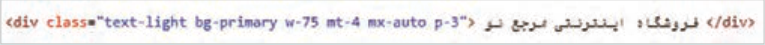
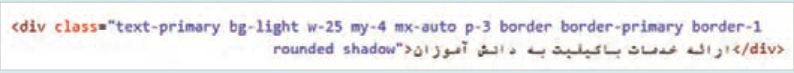
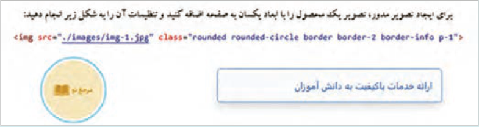
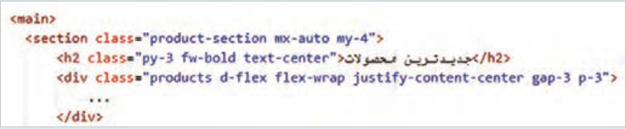
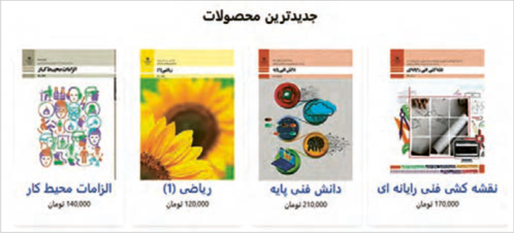
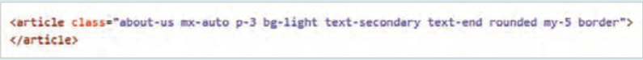
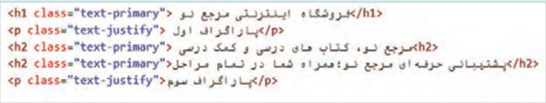
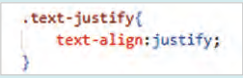

صفحه ۱۵۱
کلاسهای margin و padding بوتاسترپ دارای دو مجموعه کلاس m{side}-size و p{side}-size برای تعیین فاصلۀ اطراف و فضای اضافی داخل عناصر است که در CSS توسط ویژگیهای margin و padding تعیین میشوند. پارامتر side تعیینکنندۀ جهت درج حاشیه یا فضای خالی است و پارامتر size اندازه حاشیه یا فضای خالی را تعیین میکند. مجموعه کلاسهای m وp و مفهوم آنها در جدول زیر آمده است:
جدول 2- کلاسهای margin و padding در بوتاسترپ
کلاسهای marginکلاسهای padding
مفهوم
m-size
p-size در تمام جهات
m{t}-size
p{t}-size
بالا (top)
m{e}-size
p{e}-size
سمت راست در ltr (end)
m{b}-size
p{b}-size
پایین(bottom)
m{s}-size
p{s}-size
سمت چپ در ltr (start)
m{x}-size
p{x}-size
چپ و راست (محور x)
m{y}-size
p{y}-size
بالا و پایین (محور y)
مقدار size عددی بین صفر تا پنج است. هر یک از اعداد این محدوده بیانگر فاصله مشخصی بر حسب px است.
جدول 3 مقادیر پارامتر size بر حسب واحد اندازه گیری px
اندازه بر حسب Sizepx
4px
1
8px
2
16px
3
24px
4
48px
5
پارامتر size میتواند دارای مقدار auto نیز باشد. عبارت auto به معنای تنظیم خودکار است. استفاده از mx-auto باعث تنظیم فاصله چپ و راست عنصر با مقادیر مساوی میگردد، بهطوریکه عنصر در وسط عنصر والد خود قرار گیرد.
صفحه ۱۵۲
استفاده از کلاسهای margin و padding
کار کارگاهی
در ادامه کارگاه قبل یک عنصر div با مشخصات زیر به صفحه وب اضافه کنید:

در کد فوق مقدار فاصله عنصر <div> از عنصر بالایی برابر 24px یا (mt-4) و مقدار فاصله چپ و راست آن بهصورت خودکار (mx-auto) تنظیم شده است. همچنین فضای اضافی داخل عنصر از همه جهات برابر با 16px (p-3) تعیین شده است.
کلاسهای border، rounded و shadow
بوتاسترپ حاوی مجموعهای از کلاسها درباره خط دور، گردی گوشهها و سایر عناصر است. کلاسهای border، برای ایجاد خط دور، تعیین رنگ و ضخامت آن مورد استفاده قرار میگیرند. کلاسهای rounded برای گردکردن گوشهها و کلاسهای shadow برای ایجاد سایر عناصر کاربرد دارند. جدول ٤ به معرفی انواع کلاسهای border، rounded و shadow میپردازد.
جدول 4 انواع کلاسهای border، rounded و shadow
سایه و اندازه آن
گردی گوشهها
رنگ خط دور
خط دور و ضخامت آن
border-primary
rounded
border-secondary
border
rounded-circle
-shadow-none shadow
border-success
border-1
rounded-pill
sm
danger-danger
border-2
rounded-top
shadow
border-info
border-3
rounded-bottom
shadow-lg
border-warning
border-4
rounded-start
border-light
border-5
rounded-end
border-dark
جدول 5 کلاسهای بوتاسترپ برای تعیین اندازه گردی گوشهها و ضخامت خط دور
اندازه
مقدار گردی گوشهها
ضخامت خط دور
خط دور
1px
0px (no rounding)
1 rounded
1 border
2px
2px
2 rounded
2 border
4px
3px
3 rounded
3 border
6px
4px
4 rounded
4 border
5px
5 rounded
5 border
صفحه ۱۵۳
در مجموعه کلاسهای rounded، کلاس rounded-circle برای گرد شدن کامل یک عنصر بهکار میرود.
شرط گردشدن کامل یک عنصر، برابر بودن پهنا و ارتفاع آن است. کلاس rounded-pill نیز برای گرد شدن گوشهها همانند قرص یا کپسول بهکار میرود. کلمات start و end به سمت چپ و راست یک عنصر اشاره دارند.
استفاده از کلاسهای border، shadow و rounded
کار کارگاهی
در ادامه کارگاه قبل، دو عنصر با مشخصات زیر به صفحه test-bs.html اضافه کنید.
برای ایجاد کادر مستطیلی تصویر زیر، کد زیر را بنویسید:

برای ایجاد تصویر مدور، تصویر یک محصول را با ابعاد یکسان به صفحه اضافه کنید و تنظیمات آن را به شکل زیر انجام دهید:

کلاسهایtypography
کلاسهای متنی بوتاسترپ برای تنظیم اندازه و وزن فونت، تراز، استایل لیستها و موارد دیگر استفاده میشود. جدول ٦ به برخی از کلاسهای متنی اشاره دارد.
جدول 6 کلاسهای متنی Bootstrap
اندازه متن
وزن
تراز متن
استایل لیست
آرایش متن
fs-1 … fs-6
fw-bold
text-start
list-unstyled
text-decoration-none
h1 … h6
fw-light
text-center
list-inline
text-capitalize
display-1 … display-4
fw-lighter
text-end
text-uppercase
کلاسهای *-fs برای تنظیم اندازه فونت عناصر متنی از کوچک (fs-6) به بزرگ (fs-1) کاربرد دارد.
کلاسهای h1 تا h6 برای تنظیم اندازه برچسبهای عنوان استفاده میشود.
کلاسهای *-display برای ایجاد عناوین بزرگ و جلب توجه کاربر استفاده میشوند و مفهوم خاصی را منتقل نمیکنند.
صفحه ۱۵۴
کلاس list-unstyled استایل پیش فرض لیست را حذف میکند؛ به این معنی که علائم یا شمارههای کنار عنصر ناپدید شده و مقدار padding-left برابر صفر میگردد.
کلاس list-inline عناصر لیست را آماده چیدمان افقی میکند، بهشرطی که عناصر لیست دارای کلاس -list inline-item باشند. این نوع لیست برای منوهای ساده و ناوبریهای کوچک کاربرد دارد.
کلاسهای felx بوتاسترپ دارای کلاسهای مختلفی در زمینه طراحی عناصر صفحه با تکنیک Flexbox است. سیستم فلکس دارای دو کلاس پایه با اسامی d-flex و d-inline-flex است که برای عناصر نگهدارنده استفاده میشوند. بهطور مثال بخش معرفی محصولات نیازمند یک عنصر نگهدارنده است که محصولات درون آن بهصورت انعطافپذیر کنار هم قرار گیرند. جدول زیر برخی از کلاسهای فلکس را براساس موضوعات مختلف معرفی میکند.
جدول 7 کلاسهای Flexbox
تراز افقی عناصر
تراز عمودی عناصر
جهت چیدمان
انتقال به سطر بعد
justify-content-start
align-items-start
flex-row
flex-wrap
justify-content-center
align-items-center
flex-row-reverse
flex-nowrap
justify-content-end
align-items-end
flex-column
flex-wrap-reverse
justify-content-between
align-items-baseline
flex-column-reverse
justify-content-around
justify-content-evenly
کلاسهای *-justify-content برای تعیین تراز افقی محتوا در یک عنصر نگهدارنده استفاده میشوند. سه کلاس اول، محتوای یک عنصر را در سمت چپ (start)، وسط (center) و راست (end) تراز میکنند. سه کلاس بعدی نحوه توزیع عناصر را بر اساس فاصله بین آنها مشخص میکنند.
کلاسهای *-align-items برای تعیین تراز عناصر در راستای عمودی استفاده میشوند.
بهکارگیری کلاسهای مختلف در لایه تصاویر محصولات
کار کارگاهی
در این کارگاه کد لایه «جدیدترین محصولات» را توسط کلاسهای بوتاسترپ به شکل زیر تغییر خواهید داد.
1 فایل index.html مربوط به واحد کار 1 را باز کنید. کد لینک و اسکریپت CDN بوتاسترپ 5 را در مکان مناسب اضافه کنید.
2 در عنصر <main>، تغییرات زیر را اعمال کنید:

صفحه ۱۵۵
3 استایلهای مربوط به .products-section h2، .products و ویژگی margin در .products-section را
از فایل styles.css حذف کنید.

طراحی بخش معرفی فروشگاه
کار کارگاهی
در این کارگاه یک بخش با محتوای متنی در انتهای صفحه فروشگاه ایجاد خواهید کرد. برای طراحی این قسمت از کلاسهای مختلف بوتاسترپ استفاده کنید.
در فایل index.html برچسب <article> را به شکل زیر قبل از برچسب <main/> اضافه نمایید:

تیترها و پاراگرافهای زیر را درون برچسب <article> اضافه کنید:

فایل را ذخیره کنید و نتیجه را در مرورگر مشاهده کنید.
بوتاسترپ نسخه ۳ دارای کلاسی به نام text-justify بود که برای تراز کردن دوطرفه متن (justify) بهکار میرفت. این کلاس در بوتاسترپ نسخه ۵ موجود نیست. بنابراین، برای ایجاد تراز دوطرفه متن در پاراگرافها، لازم است کلاس سفارشی text-justify را با استفاده از کد زیر به فایل styles.css اضافه نمایید:
